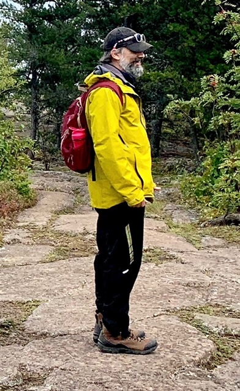
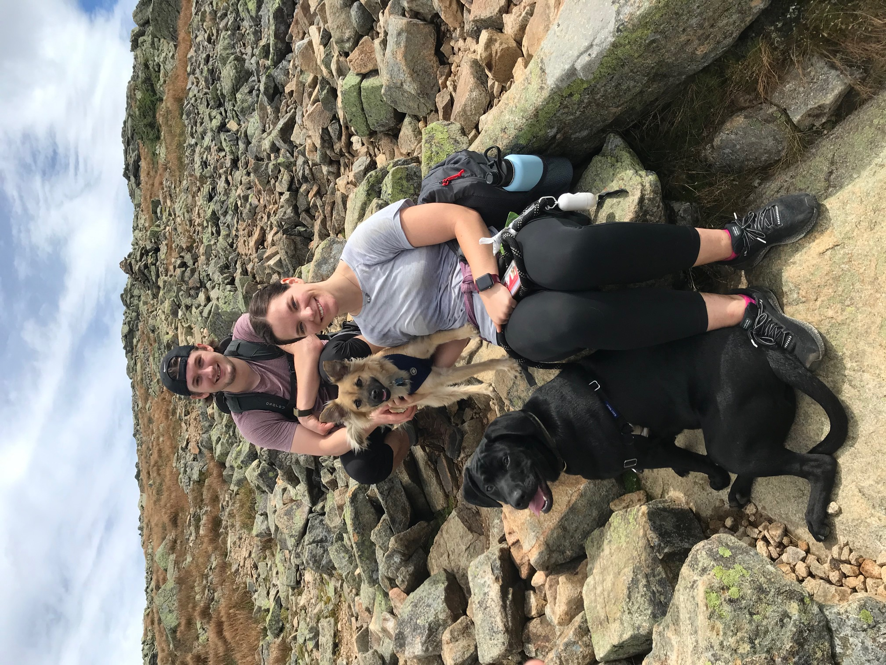
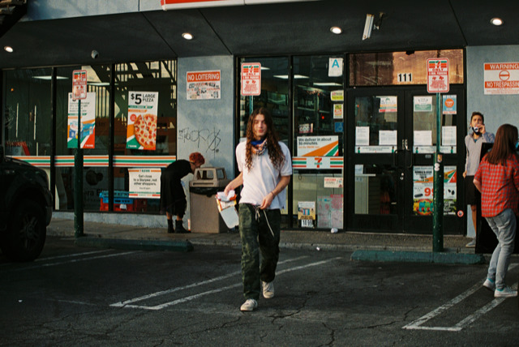

As you have probably noticed by now, 2020 has been…different. This year we decided to go along with the theme. Our annual eye-roll-inducing card is digital! We don’t have to spend money to send you a card and you don’t have to feel obligated to keep our ugly faces on your fridge for two months.
Jeff
What a challenging year. For you, for me, for everyone. Anyone who suggests otherwise has probably been on a remote, inaccessible island without any lifeline to the outside world. So, rather than focus on the things that we’re all managing, I’d rather focus on the things for which I’m thankful.
I’m thankful for the reasonably good health of my family and friends, and I’m thankful for those who put themselves in harm’s way to fight for the equity, health, and safety of others. I’m thankful for having a job which allows me to work from home and the corresponding commute. I’m thankful not only for video conferences, but also for video conference filters which mask the fact that I haven’t had a haircut since February. I’m thankful for the savings from the lack of haircuts which I’ve been able to put towards quality moustache waxes and beard balms. I’m thankful that I’ve had the ability (and motivation) to spend more time outdoors, something I plan on continuing throughout the winter. And I’m thankful for everyone who has been willing to sacrifice some of their own desires in an effort to protect those around them.
Most of all, I’m thankful that 2020 is coming to an end. Good riddance.

Tyler
2020 was quite the year. At the beginning of March right when Boston went into quarantine, Alie and I decided to make a trip to CT to stay with her parents. What we thought was going to be a two week stay turned into four months. During this time I graduated from Northeastern University (finally!) and started a full-time job as a DevOps Engineer at SimpliSafe.
Like my father, I have not had my hair cut since the begining of the year and have been negligent about cutting the hair on my face as well. You can all be thankful you don’t have to see me this year. Eventually, Alie and I left Connecticut and moved back to Massachusetts into a new apartment a little further away from the city. We have spent the remainder of the year trying to find ways to entertain ourselves in our new space. So far there’s been plenty of video games, board games, reading, dog walks, hikes, knitting, and an attempt at learning bass guitar.
{kind=link}

Nico
2020 for me followed the same path as many others – as March dragged on, I went from being furloughed to having my job eliminated. Not to worry, though, as I ended up having ample time to decide what was next for me. Following a late September, two-week vision quest in Chicago, I returned home, packed up my belongings and moved to Los Angeles with friends to pursue a change of pace and sharpen my wildfire dodging abilities. Do I like it out here? I do, but we’re in the middle of a lockdown, so the uncertainty of the overall situation is greater than I’d prefer. At least it’s not cold here…

Alex
You probably know me best as the one you know the least. No worries! I embrace that attribute and I can assure you that I do, in fact, exist. A little about me: I graduated from high school last spring and, while it was sad not having an excruciatingly long in-person graduation ceremony, I wore a tiny party hat and fist-pumped when they called my name in the online event. I spent the summer working 40-hour weeks in the electronics section of the germ pool known as Target. I’m very proud of this because, in times of crisis, it is essential for people to come in and touch all of the TVs, cell phones, and tablets they’ll eventually buy off Amazon. In September, I landed at the University of Minnesota – Twin Cities where I’m hoping to major in biomedical engineering. I’ve managed to make some new friends, but I’m not actually sure who any of them are, what with all the disguises.
Ellie
2020 was supposed to be a big year for me! Well, I guess it still was… I turned 16, I got my driver’s license (on the first try), and I started working at Target where I was asked to be a team captain. Here’s how I feel about that:

As you might guess, I’m trying to avoid becoming drunk on my own power (but it’s sooo hard not to). I’m also trying to figure out how to excel at distance learning which, you may have heard, isn’t as effective as the in-person type. Zoom calls may be effective replacements for family gatherings (ha!) but there are still some glitches that need to be worked out, most of which are mine 😉.
Cheers
We wish you a happy and healthy 2021!